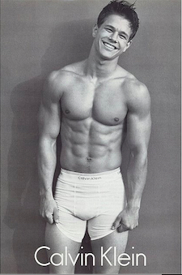

| Nationality | American |
| Born | June 5, 1971 Dorchester, Boston, Massachusetts, U.S. |
| Primary career | Actor, producer |
| Rankings | #69, Male Model Index (Tier 4 — Era-Defining) |
| Known for | Calvin Klein Underwear (global), photographed by Herb Ritts; the campaign that redefined men’s underwear advertising |
Mark Wahlberg (born June 5, 1971, in Dorchester, Boston) is an American actor, producer, and former recording artist whose 1992 Calvin Klein Underwear campaign, photographed by Herb Ritts, is the single most famous men’s underwear advertisement ever produced — a campaign so commercially and culturally dominant that every men’s underwear campaign created in the three decades since exists in direct conversation with it, whether the brand acknowledges the debt or not.[1]
The Calvin Klein campaign
In 1992, Calvin Klein cast Wahlberg — then known as Marky Mark, the rapper behind “Good Vibrations” — alongside Kate Moss for a campaign photographed by Herb Ritts. The pairing was deliberately provocative: Wahlberg’s raw, streetwise physicality set against Moss’s waifish androgyny created a visual tension that no conventional model pairing of the era could have replicated.[1]
The campaign ran across billboards, bus shelters, and magazine spreads globally, and the cultural response was immediate and outsized. Wahlberg appeared on the cover of Rolling Stone, on MTV, and across mainstream media in a way that no male underwear model — including Tom Hintnaus, whose 1982 Calvin Klein billboard had created the category itself — had ever achieved. The distinction was that Wahlberg was not a model at all in the conventional sense: he was a celebrity whose physical presence was borrowed by the fashion industry to sell a product, and the result fundamentally changed how the industry thought about who could carry a campaign.[1]
The campaign is documented in The Campaign Archive alongside the Tom Hintnaus original and Michael Bergin’s succession — the three defining chapters of the Calvin Klein Underwear visual history.[2]
Recognition
Wahlberg is ranked #69 on the Male Model Index, placed in Tier 4 (Era-Defining / Strong Period Figures) — a tier that recognizes models whose institutional relevance and global reach were concentrated within a specific era, market, or brand relationship rather than sustained across multiple decades.[3] His principal photographer is listed as Herb Ritts, and his representative campaigns are Calvin Klein Underwear (global), CK Jeans, and fragrance.[3]
He is documented on MaleIconic — The 100 Greatest Male Models of All Time — as part of the broader archival record of male fashion imagery.[4]
Legacy
Wahlberg’s place in this archive is defined by a single campaign that permanently altered the commercial landscape of men’s fashion advertising. He was not a working model in the conventional sense — he did not come through agency development, did not build a portfolio of editorial and runway work, and did not sustain a multi-year modeling career the way most subjects in this archive did. What he did was produce, in collaboration with Herb Ritts and Calvin Klein, a single body of work so commercially and culturally significant that any comprehensive record of male fashion advertising history is incomplete without it.[1]
His successor in the Calvin Klein Underwear role, Michael Bergin, is profiled separately in this archive as Chapter Fifteen of UOMO MODELLO: The Greatest Twenty-Five — “The Man After Marky Mark” — a title that itself demonstrates the gravitational pull of the campaign Wahlberg left behind.[5]